Kutchan
Kutchan · Hokkaido
Kutchan
Highlighted on the Hokkaido map.
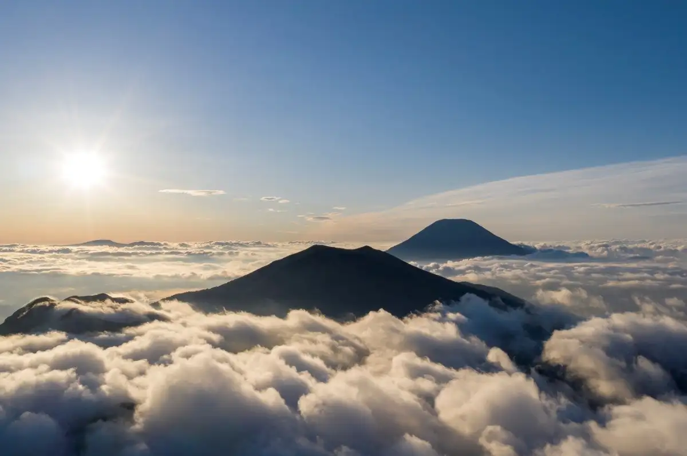
Stay
ＳＴＡＹ ＬＩＶＩＮＧ ＮＩＳＥＫＯ
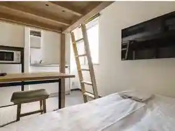
S T A Y L I V I N G N I S E K O
ＳＴＡＹ ＲＥＳＯＲＴ ＮＩＳＥＫＯ
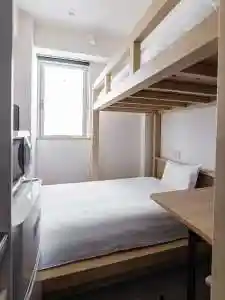
S T A Y R E S O R T N I S E K O
ニセコタウンリトリート オニキス
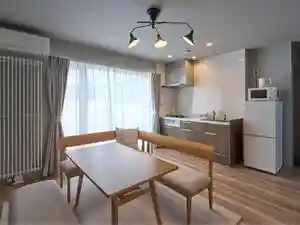
Nisekotaunritoriito Onikisu
ニセコタウンリトリート アンバー
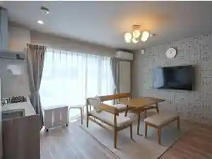
Nisekotaunritoriito Anbaa
スマートホテル倶知安
Sumaatohoteru Kutchan
ホテルスリーエム
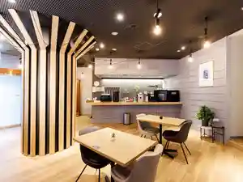
Hoterusuriiemu
JL HOUSE KUTCHAN
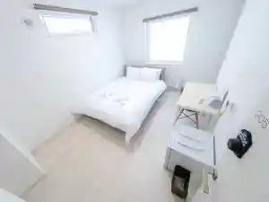
Jl House Kutchan
HOTEL LOGIN NISEKO
Hotel Login Niseko
トリフィート ホテル＆ポッド ニセコ
Torifiito Hoteru & Poddo Niseko
Ａｋｉｙａｍａ
A K I Y A M A
Panorama Niseko
Panorama Niseko
MY ECO LODGE（マイエコロッジ）
My Eco Lodge ( Maiekorojji )
Dining
ジンギスカン えいじん 倶知安店
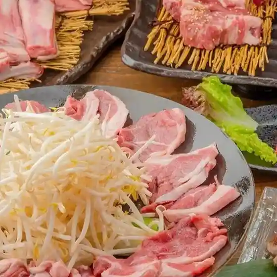
Jingisukan Eijin Kutchan Mise
Cucina italiana Santo
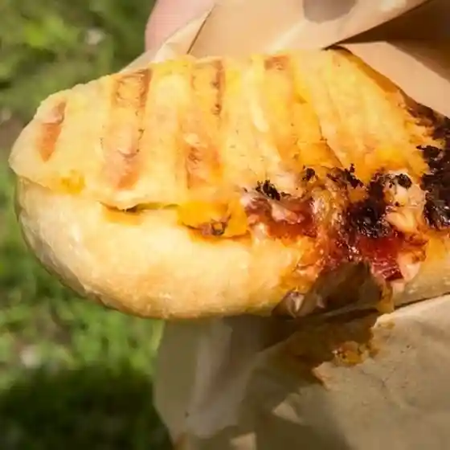
Cucina Italiana Santo
焼肉 黒牛屋
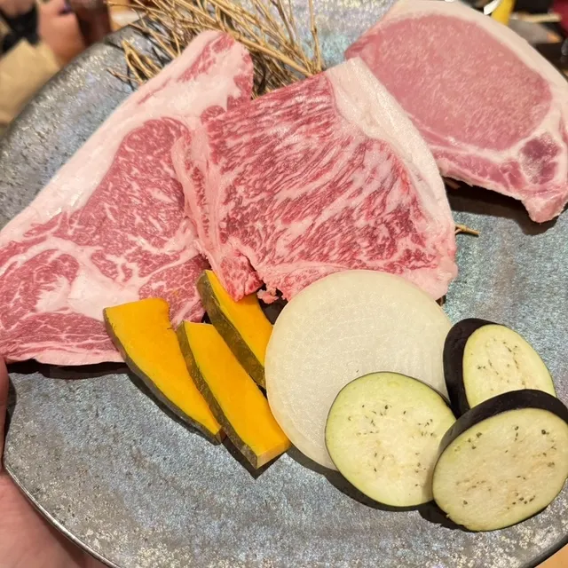
Yakiniku Kuroushi Ya
備長炭炭火焼鳥 ニセコおでん影
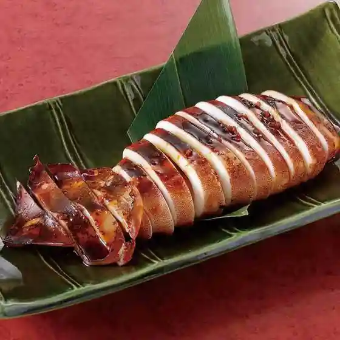
Binchou Sumi Sumibi Yakitori Niseko Oden Kage
タージ・マハール 倶知安店
Taaji Mahaaru Kutchan Mise
鮨 心 by 宮川 ニセコ店
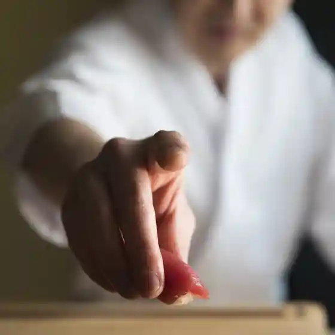
Sushi Kokoro By Miyagawa Niseko Mise
なり田
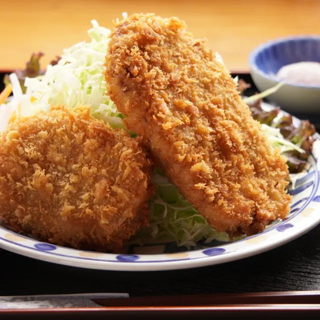
Nari Ta
弁当・仕出し にしかわ
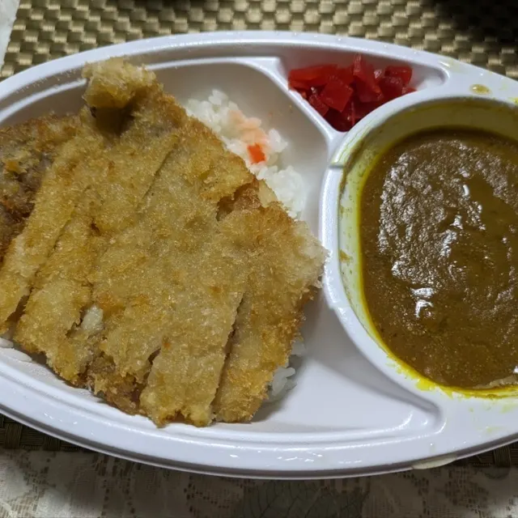
Bentou Shidashi Nishikawa
マルキュー商店
Marukyuu Shouten
NISEKO HIRAFU GREEN PARK
Niseko Hirafu Green Park
ヴィラ ルピシア スイーツショップ
Vira Rupishia Suiitsushoppu
二世古酒造
Nisei Furuzake Zou
湯元ニセコプリンスホテルひらふ亭
Yumoto Nisekopurinsuhoteru Hirafu Tei
お気楽キッチンBoroya
O Kiraku Kitchin Boroya
ワギュウ バーベキュー 成
Wagyuu Baabekyuu Sei
龍の鍋
Ryuu No Nabe
わっくわく
Wakkuwaku
梅寿し
Baiju Shi
ゲンテンスティック ショウルーム カフェ&ギャラリー
Gentensuteikku Shouruumu Kafe & Gyararii
タンタアン
Tantaan
すき焼割烹 日山 NISEKO
Suki Yaki Kappou Hiyama Niseko
ニューホワイトベアー
Nyuuhowaitobeaa
Rakutani Niseko Hotpot
Rakutani Niseko Hotpot
神戸牛焼肉 神戸亭
Koube Ushi Yakiniku Koube Tei
Sights
Nisekoannupuri
Nisekoannupuri
Mishima San no Shiba Zakura Garden
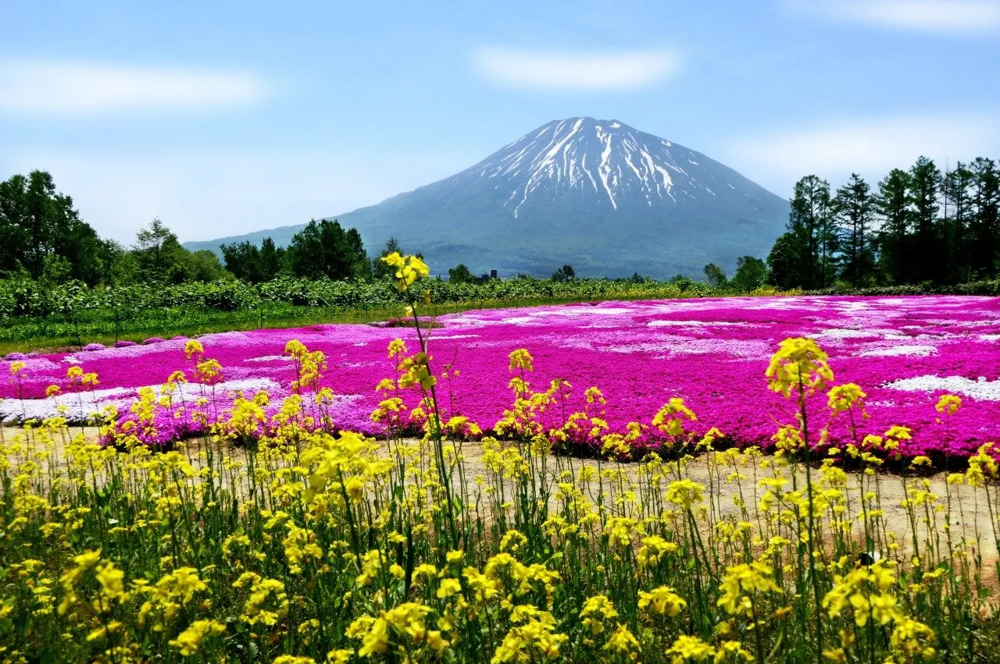
Mishima San no Shiba Zakura Garden
Nisei Furuzake Zo
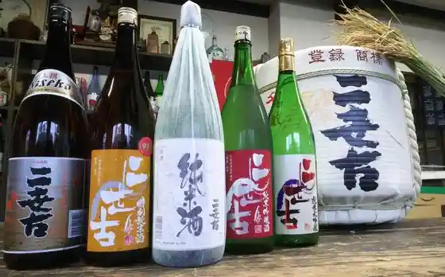
Nisei Furuzake Zo
Guddosupotsu
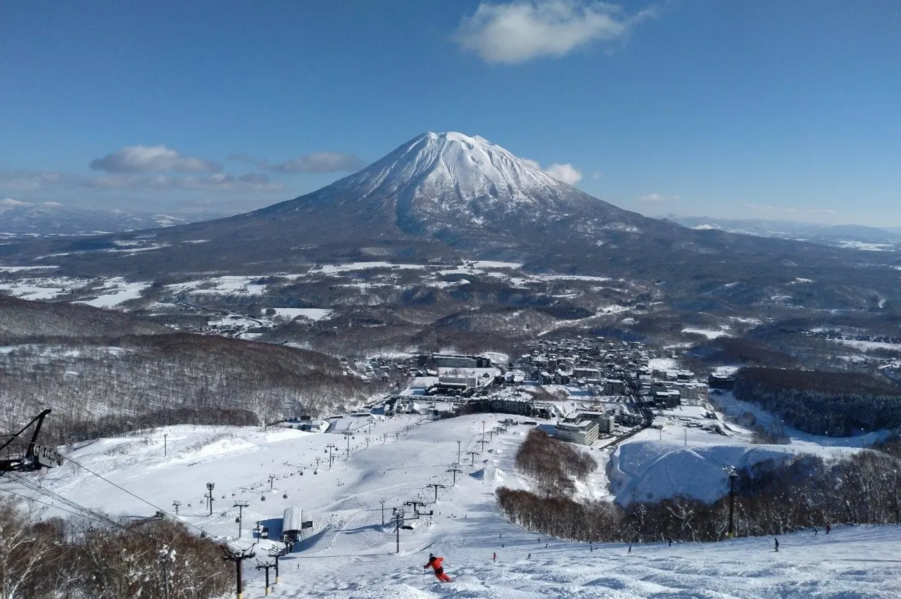
Guddosupotsu